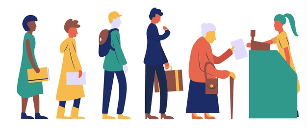

Introdução à estrutura de dados da fila(queue)
Uma fila é uma lista ordenada de elementos em que um elemento é inserido no final da fila e removido da frente da fila.
Ao contrário de uma pilha stack, que funciona com base no princípio do último a entrar last-in, primeiro a sair first-out (LIFO), uma fila queue funciona com base no princípio do primeiro a entrar first-in, primeiro a sair first-out (FIFO).
Uma fila tem duas operações principais envolvendo a inserção de um novo elemento e a remoção de um elemento existente.
A operação de inserção é chamada de enfileiramento e a operação de remoção é chamada de desenfileiramento. A operação de enfileiramento insere um elemento no final da fila, enquanto a operação de desenfileiramento remove um elemento da frente de uma fila.
A figura a seguir ilustra uma fila:

Outra operação importante de uma fila é obter o elemento da frente chamado peek. olhadinha Diferente da operação de desenfileiramento, a operação de espiar peek apenas retorna o elemento na frente sem modificar a fila.
O nome fila vem da analogia com uma fila de clientes em um banco. O cliente que chegar primeiro será atendido primeiro, e o que vier depois será colocado na fila no final da fila e será atendido posteriormente.
